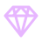

GTA 6攻略 /
GTA 6収集品: 瞑想、WAiNK、カード、ドローン、ガレージ
発売以来収集された実際の場所: 10 の瞑想スポット、14 の最高に楽しいドローン レース、22 の銀行 (金庫)、12 のガレージ物件、35 のスマッシュ アンド グラブ、2 つの射撃場。合計は 2 つの独立したガイドによって確認されます。場所は、2番目の情報源がその場所を指定するまで「確認中」のままです。 2 人のプレイヤーがキャプチャして公式マップにピン留めした場合にのみ、マップ上に表示されます。

GTA 6攻略 /
発売以来収集された実際の場所: 10 の瞑想スポット、14 の最高に楽しいドローン レース、22 の銀行 (金庫)、12 のガレージ物件、35 のスマッシュ アンド グラブ、2 つの射撃場。合計は 2 つの独立したガイドによって確認されます。場所は、2番目の情報源がその場所を指定するまで「確認中」のままです。 2 人のプレイヤーがキャプチャして公式マップにピン留めした場合にのみ、マップ上に表示されます。
| カテゴリ | カウント |
|---|---|
| 18 | |
| 最高に楽しいドローンレース | 14 |
| 42 | |
| 8 | |
| 22 | |
| スマッシュアンドグラブ | 35 |
| WAiNKの場所 | 100 |
| 収集可能なカード | 18 |
| 探索するエリア | 52 |
| レース | 20 |
| 活動内容 | 9 |
唯一逃すべきトロフィー: 最初の瞑想は第 1 章で発生します。
トロフィー : Positive Mental Attitude (bronze)
14 か所、タイムトライアルは各 3 回 (合計 42 回)。場所ごとに 1 つのレースに勝利すると、トップ ファン トロフィーが獲得できます。
トロフィー : Top Fun (bronze)
The Shootist では 2 つの射撃場 ( Vice Cityのグリフィン、ロジャーズランチ)、12 のチャレンジ、42 個の金メダルを獲得しました。
トロフィー : The Shootist (argent)
購入可能なガレージ 8 台 (合計 $160,000、デイリー ドライバー後のVice City Real Estate アプリ) + 4 階建てガレージ。
トロフィー : Little Boxes (bronze)
22 銀行: 小型 14 銀行 (キャッシュ ドロワー + 金庫)、金庫付き大型 8 銀行。最大引き出しのために 5 つの保管庫を強奪します。
トロフィー : Maximum Withdrawal (argent)

スマッシュアンドグラブ 0/3535 スマッシュアンドグラブ（宝石店と質屋）。 100%にするには34個必要です。
トロフィー : Sneakthief (bronze)
18セット、カード480枚。 Don't Touch My Deck の場合はフルセット 3 個、100% 完了の場合は 15 個です。
トロフィー : Don't Touch My Deck (argent)
進行状況はこのデバイス (ブラウザ) 上に残るため、アカウントは必要ありません。